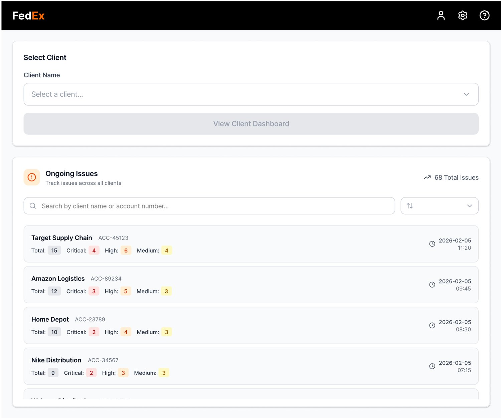
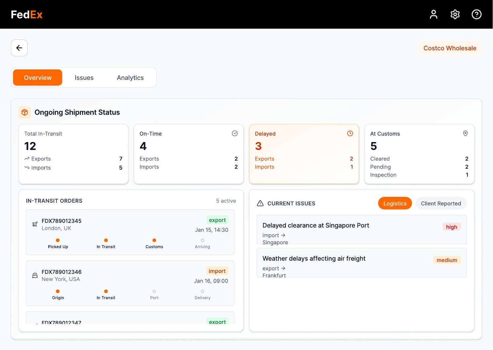
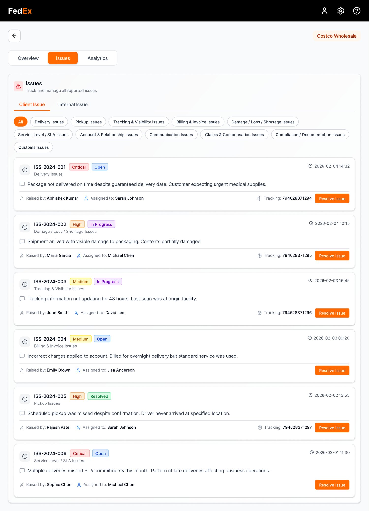
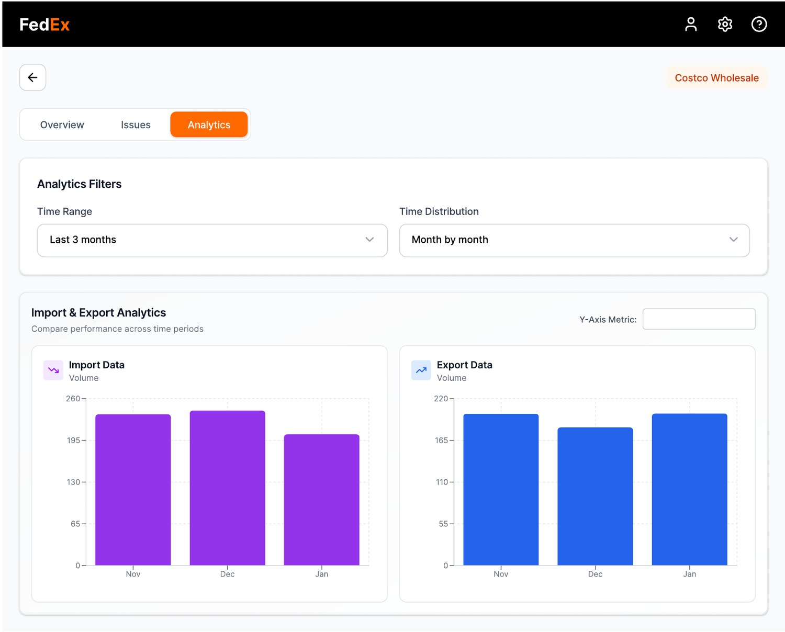

Data sprawl
Delivery, client, route and exception data originate from different systems with incompatible formats and update frequencies.
Case study · 2026 · UX & systems
In brief
A territory manager's day is spent stitching together four systems that never speak to each other. This dashboard collapses delivery, client, route and exception data into one surface you never have to leave.
00 — Disclosure
Independent academic exercise. This design project was completed as part of my academic learning at IIT Roorkee, under the guidance of Mr. Nishant Kumar, Territory Manager at FedEx Vadodara. This is not an official FedEx project and is not endorsed by FedEx Corporation. No proprietary or confidential business data was used.
01 — Overview
In the contemporary logistics ecosystem, territory managers operate within an increasingly fragmented information architecture. Delivery status, client records, route performance and exception handling all live in separate systems — forcing managers to context-switch constantly to build any coherent picture of their territory.
The challenge: synthesising all of that operational data into a single actionable surface — one where a manager can move from overview to drill-down without leaving the screen.
02 — Key challenges
Through conversations with the mentor and secondary research into logistics operations, four core design tensions emerged:
Delivery, client, route and exception data originate from different systems with incompatible formats and update frequencies.
Logistics is real-time. Delays cascade. Managers need to spot issues before they compound — not after a report is generated.
Territory data is geographic by nature. Representing route density and coverage gaps in a flat interface requires careful hierarchy.
Managers need to jump from territory overview to a specific client's issue log without losing context or reloading.
03 — Final design
The dashboard is structured around the way a manager actually works — starting from the territory home view, drilling into client records, resolving issues, and reading analytics — all within one continuous interface.




04 — Conclusion
The FedEx Territory Management Dashboard demonstrates how logistics data — when unified rather than siloed — enables faster, more confident decision-making. Territory managers gain a single surface that moves with them from the overview down to the issue log, without losing context at any step.
4
Unified views
1
Workspace
0
Context switches needed